Suggested Museums
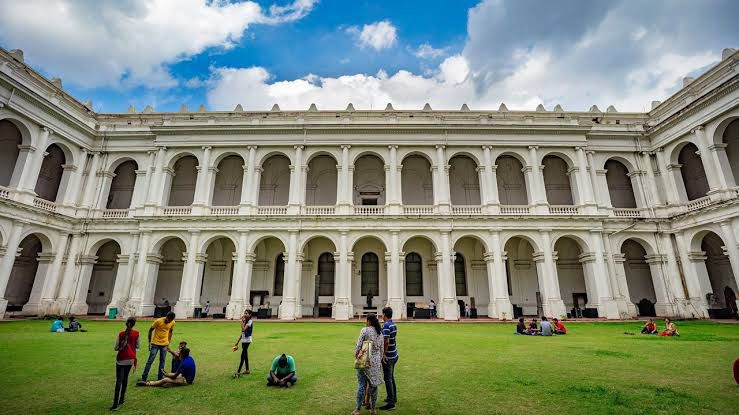
Chhatrapati Shivaji Maharaj Vastu Sangrahalaya
- Location: Mumbai, Maharashtra
- Description: Indo-Saracenic building with Indian and foreign artifacts.
- Type: Art and Archaeology
- Established: 1922
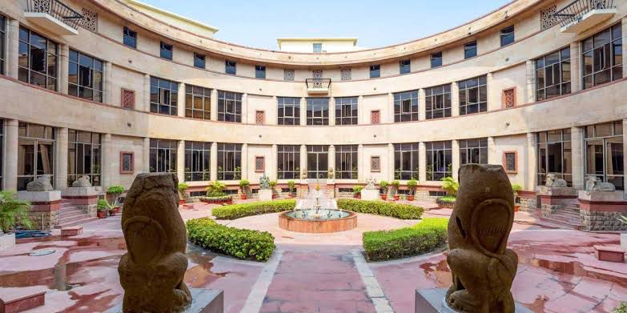
National Museum
- Location: New Delhi
- Description: Covers Indian history from pre-historic to modern times.
- Type: History & Culture
- Established: 1949
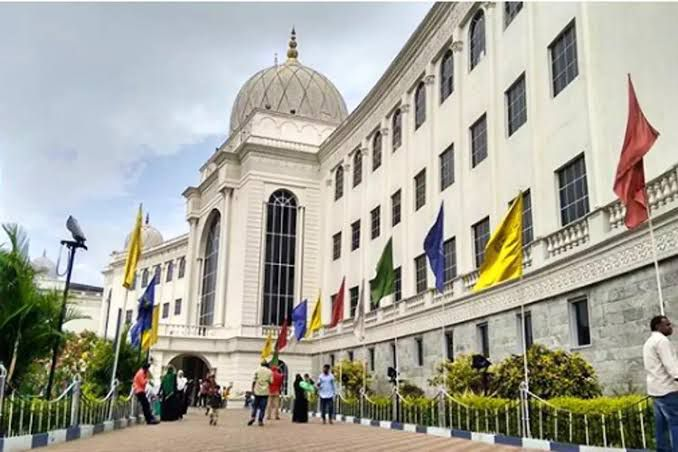
Salar jung Museum
- Location: Hyderabad, Telangana
- Description: Houses the personal collection of Nawab Salar Jung III; features rare artifacts, sculptures, and clocks.
- Type: Art and Aniques
- Established: 1951
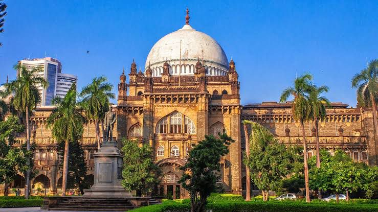
Chhatrapati Shivaji Maharaj Vastu Sangrahalaya
- Location: Mumbai, Maharashtra
- Description: A beautiful Indo-Saracenic building housing ancient Indian artifacts and foreign art.
- Type: Art and Archaeology
- Established: 1922
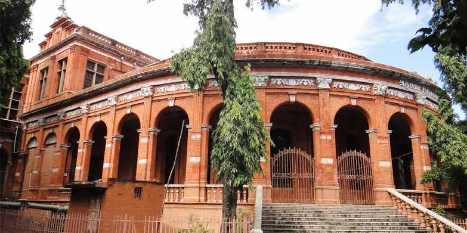
Government Museum (Madras Museum)
- Location: Chennai, Tamil Nadu
- Description: Description: Famous for its rich archaeological and numismatic collections, and a children’s museum.
- Type: Archaeology, Anthropology, Zoology
- Established: 1851
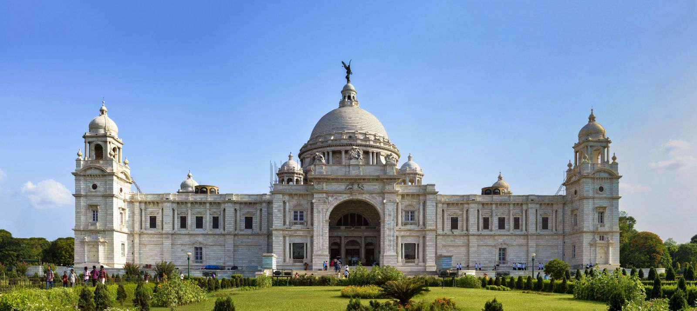
Victoria Memorial Hall
- Location: Kolkata, West Bengal
- Description: A majestic marble building with a museum inside, commemorating Queen Victoria; displays colonial artifacts.
- Type: History and Colonial Art
- Established: 1921
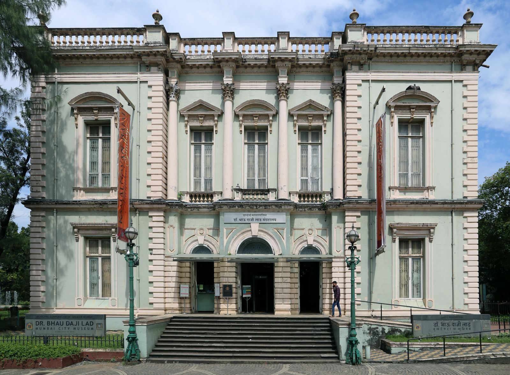
Dr. Bhau Daji Lad Museum
- Location: Mumbai, Maharashtra
- Description: Mumbai’s oldest museum, showcasing decorative arts and the cultural heritage of the city.
- Type: Decorative Arts and Local History
- Established: 1855
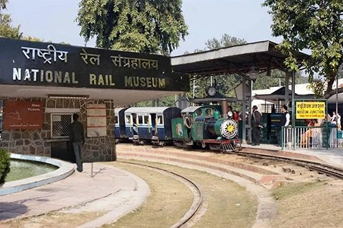
National Rail Museum
- Location: New Delhi
- Description: Dedicated to India’s railway heritage, featuring vintage engines, coaches, and models.
- Type: Transport (Railways)
- Established: 1977
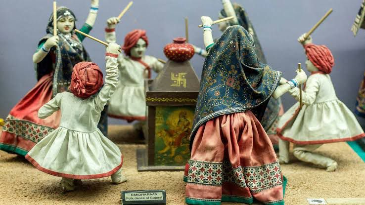
Shankar’s International Dolls Museum
- Location: New Delhi
- Description: A unique museum with dolls from over 85 countries, founded by political cartoonist Shankar.
- Type: Toy and Doll Museum
- Established: 1965

Gandhi Smriti
- Location: Gandhi Smriti
- Description: Located at the site of Mahatma Gandhi’s assassination; includes his personal belongings and last footsteps.
- Type: Memorial and History
- Established: 1973
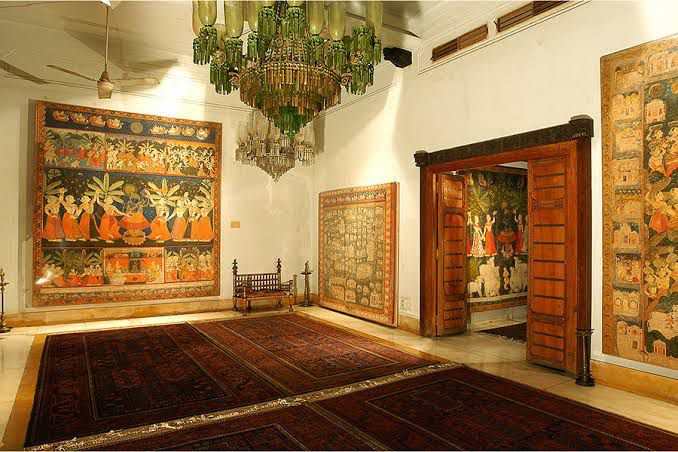
Calico Museum of Textiles
- Location: Ahmedabad, Gujarat
- Description: One of the finest textile museums in the world, preserving centuries-old Indian fabrics and techniques.
- Type: Textile and Handicrafts
- Established: 1949
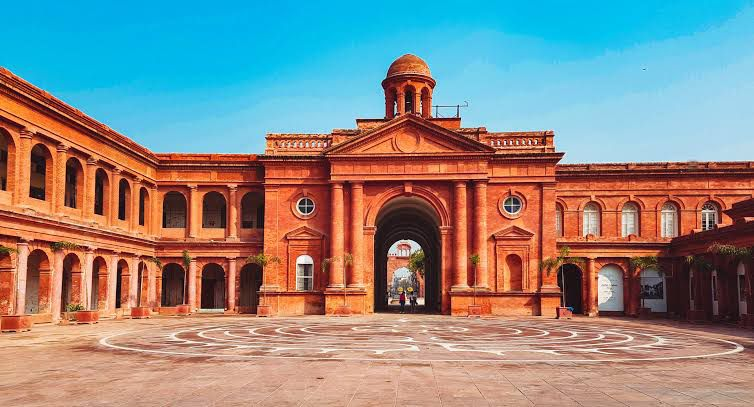
Partition Museum
- Location: Amritsar, Punjab
- Description: Dedicated to the memory of Partition in 1947, featuring survivor stories and archival documents.
- Type: History and memory
- Established: 2017
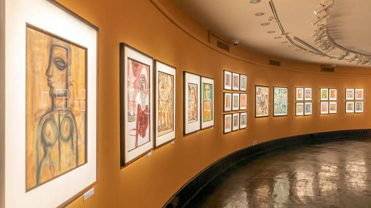
National Gallery of Modern Art (NGMA)
- Location: New Delhi (branches in Mumbai & Bengaluru)
- Description: Showcases works by modern and contemporary Indian artists like Amrita Sher-Gil and Rabindranath Tagore.
- Type: Modern Art
- Established: 1954
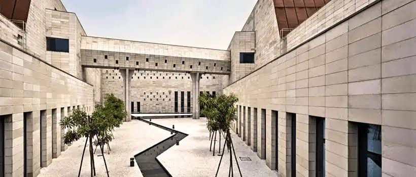
Bihar Museum
- Location: Patna, Bihar
- Description: A modern museum displaying Bihar’s ancient glory from Maurya and Gupta empires to modern history.
- Type: History and Culture
- Established: 2015
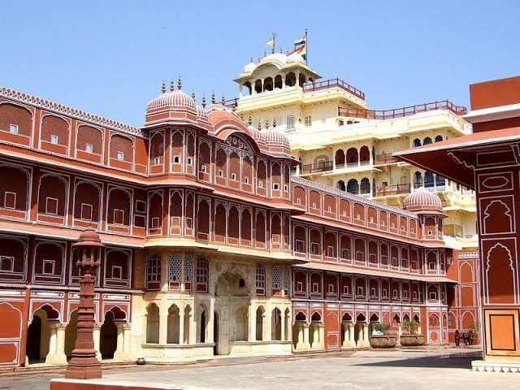
City Palace Museum (Maharaja Sawai Man Singh II Museum)
- Location: Jaipur, Rajasthan
- Description: Set inside Jaipur’s City Palace, showcasing royal costumes, weapons, and art of Rajput kings.
- Type: Royal Heritage and Culture
- Established: 1959